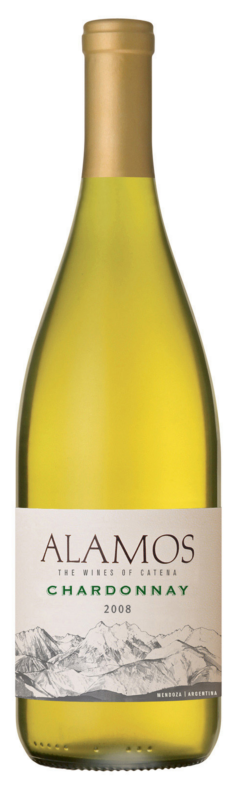

Welcome to your personal wine sommelier.
Popular Wine of the Day
Alamos Chardonnay
A very aromatically pretty wine with earth, dark cherry, licorice, and toasty spices. The palate is understated and refined with chewy fruit flavors. Continues to ramp up in intensity after several days of being open. Aged in French oak (75% new). 75 cases produced. To be released next spring. Sample provided by winery.